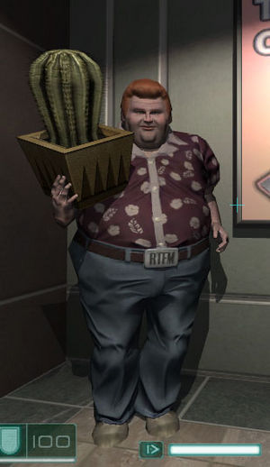
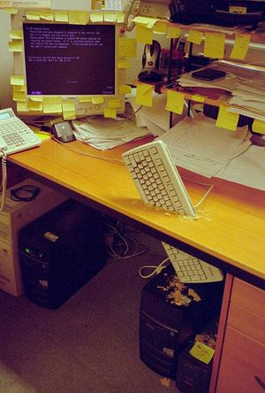

Informático
 De: La Frikipedia, la enciclopedia extremadamente seria.
De: La Frikipedia, la enciclopedia extremadamente seria.
| De la serie tribus urbanas del mundo:
|
| Informático
|
Ejemplo de la tribu

|
| Engendro informatitititititico
|
|
| Hábitat
|
Silla que esta frente al ordenador
|
| Inteligencia
|
8
|
| Frase favorita
|
quiero ver todo,incluso lo mas intimo, QUIERO VER TUS CIRCUITOS!!!
|
| ¿Peligroso?
|
jajajajajajjajajajajaj
|
| Obsesión
|
El compu y el p0rn
|
| Notas
|
121293994343¡¡0003+123004``+123+40
|
 Espécimen común con correa RTFM
Informático, según la RAE, dícese del hombre raro que se dedica a hacer powerpoints.
Se llama por este nombre a ciertos individuos (algunos datos indican cierta existencia de féminas cuyo % resulta más anecdótico que otra cosa) que sienten una arrebatadora pasión por los computadores en cualquiera de sus formas (enteros, medio averiados, mitad destripados, con cierto tufillo a que se ha quemado algo por ahí dentro, etc) y con sus respectivos sistemas operativos en distintos grados de destrozo (recién instalado, comenzando a fallar algo inexplicablemente, detectada una colonia de microorganismos justo debajo de la CPU, con un gestor de arranque que se juega al cara o cruz con el ventilador si arranca o no, con un conjunto de particiones que no terminan de ponerse de acuerdo en qué orden se ponen, con un MBR que empieza a cansarse de tantos cambios y con un disco duro que empienza a tener agotada la RAM/paciencia con tanto fdisk). También se conoce como informático al macho de la informática.
Véase también estudiante de informática, informática o programador.
Historia
Tras el estorunido inicial de Diox y la posterior creación del universo, fue creado en un recondido lugar de la galaxia, donde aparecieron los primeros homínidos cartilaginosos ambiparietales, el dios de la Informática John Forsaken. Como se sentía solo, llamó a los participantes del Concilio de Anillo, excluyendo a Frodo y a Harry Petas porque no toleraba la homosexualidad entre sus pares. En un inciso, Lord Voldemort entró en desacuerdo con John Forsaken, retándolo a un duelo en el WOW, cosa que sabía que no podía hacer ya que es alérgico a los Troll y a los hechiceros cuando pasa a formato binario. Viendose en desventaja, John Forsaken, con su intrépido valor y un mouse al estilo Indiana Jones acepto el reto y haciendose una paja entró al mundo digital para luchar con Lord Voldemort, pero una vez allí le apareció un ejercito de Digimon y Pokemon al que no podía enfrentarse solo. Para ello convocó a las hordas de Gambas en almíbar, que con sus poderes subnormales podían controlar el avance de sus enemigos. Durante la batalla, John esquivó a un pikachu rojo de la muerte, y tras de él, se encontró con Lord Voldemort. Sacaron sus espadas (Lord Volvemort a Narsil, John Forsaken su Nabo Toledano) y comenzaron la escaramuza. Al chocar las espadas, Narsil se destruyó en mil pedazos, creando los Calamares de Rio.
John Forsaken se apiadó de Lord Voldemort, y al volver al mundo anormal, en el concilio, todos votaron para la creación de una nueva raza; Los Informáticos.
Lo que no sabían es que en el mundo digital, los Calamares de Rio se hacían fuerte, pero dada su base binaria, no podían hacerse anormales o materiales.Por lo tanto, accedieron a los únicos seres de la galaxia que podían estar en todos los lugares o ninguno, los Wombat, se aliaron con ellos y les pidieron que dejaran muestras de ADN mutante con micrófilos espongiformes, en especial el de su nabo autofollador, para que pudiesen reproducirse, y así poder ser materiales. Lord Voldemort volvió al mundo digital, y al ver sus avances, decidió convertirse en su guía espiritual y comandante en jefe, y les enseñó el nuevo mundo material, en el cual su único destino era luchar contra las gambas en almíbar e informáticos, y se dieron un nunevo nombre en clave ; Los AQSMDI (Amigos que saben mucho de informática). Su poder era tal que podían morderse las orejas,doblar esquinas, tronchar vigas y reparar condones.
¿Cómo reconocer a un informatico por la calle?
Los putos informáticos tienen unas pollascaracterísticas comunes que les diferencian del resto de las zebras, son los siguientes:
-Son gordos.
-Son flacos.
-Tienen el pelo rizado y moreno o una coleta.
-Llevan gafas (notejode).
-Tienen la cara redonda.
-Son gordos.
-Son flacos.
-Tienen cayos en las manos de tanto "#$%@la solos.
-No son pequeños, más bien gordosgrandes.
-Sus pantalones son mas cortos de lo que deberían ser.
-También hay una versión en delgado y alto.
-Traen una playera con algún chiste geek como "i es mi amigo imaginario"
Inevitablemente, un informático está siempre programando.
Eso no quita que justo en la barra de tareas se puedan observar algunos programas más, siendo los más usuales:
eMule: bajándose automáticamente todos los MP3 existentes. A destacar que luego van los MP4, los MP5 y los MP6. El MP7 esta aún en fase de planificación, pero dará igual, se lo bajará a ver que tal va.
BitTorrent: indispensable para bajarse los últimos éxitos. Muy abajo del todo comprobamos que aparte de las películas más taquilleras de los últimos meses se encuentra toda la "Saga X", entendiéndose como tal toda peli porno que ha pillado sabe Dios donde y que se descarga de manera prioritaria.
Firefox: indispensable para bajarse los últimos vídeos de sexo disponibles en la Red, en determinadas páginas que actualizan aproximadamente cada hora u hora y cuarto. Por supuesto se verán con el RealPlayer con la opción de pantalla completa (faltaría más).
Opera: para cualquier otra consulta en la web NO relacionada con el sexo, se requiere otro navegador no sea que por error seleccionemos la web que no es en el momento menos oportuno y se monte el gran sarao. Ej: padres convencidos de que el hijo necesita Ono para estudiar y por error, en el momento menos oportuno, el hijo selecciona una ventanita de Firefox donde una preciosa adolescente salta en pleno monitor mostrando al mundo su cuerpo serrano sin atuendo alguno.
Compilador: de lo que sea, el caso es que tienen siempre un compilador abierto para simular que en realidad están trabajando en algo, haciendo pruebas de lo que sea.
Mero BurningOut: dado que entre eMule, BitTorrent y Firefox esta siempre descargando películas y fotos, necesita dicho programa para grabar en DVD (los CDROM fueron desterrados al olvido en cuanto los DVD salieron al mercado) un par de veces al día todo el material descargado.
Curiosamente, a escasos metros del ordenador suele encontrarse un extintor. Se trata de prevenir sobrecalientamientos en el caso de que el vídeo (o película) a visionar una vez descargado sea tan hot que exista peligro real de incendio o los producidos por su 386, muy overclockeado para lograr velocidades de 5 Ghz. Los manuales se pueden volver a comprar, ¡¿pero ese vídeo?!
Por supuesto, existen Informáticos que realmente trabajan en lo que se supone que hacen, aunque según fuentes no oficiales, por las noches, cuando nadie vigila, el BitTorrent está trabajando...
También denominado Pringao
 Los informáticos son muy habilidosos al teclado.
Así trabaja un informático
- Cuando el informático le diga que acude en su ayuda, puede desconectarse de la red e irse a por un café. No es ningún problema para los informáticos acordarse de todos los passwords de los usuarios. Además, los informáticos son adivinos...
- Hágale saber, siempre que necesite que le resuelva un problema en su equipo, que no puede prescindir de él el tiempo necesario para resolver el problema (él nunca pensará que está alegre por tener excusa para holgazanear). Sí le replica, cúlpele del fallo del equipo, al fin y al cavo cada informático es el responsable tanto de las piezas como de los programas desde que se diseñan y se fabrican, hasta se ensamblan e instalan.
- Cuando se llame a un informático para que cambie su ordenador de sitio, asegúrese de que lo deja todo bien enterrado bajo media tonelada de postales, fotos de sus niños, animalitos de todas clases, flores secas, trofeos varios, etc. A los informáticos, como no tienen vida privada, les encanta echar un vistazo a la suya. Además, no se preocupe de que llevar el ordenador al lugar destino del cambio. No toque nada, no sea que estropee algo al desenchufar cables, además en su sitio de destino estorbará, y los informáticos adoran cargar peso, por ello estudiaron informática.
- No olvide preguntarle a su informático que clase de uso de su ordenador queda registrado al cual los jefes tendrían acceso. Si se da esta situación exíjale al informático saltarse las directivas y configurar su equipo de forma que salvaguarde su privacidad, ya que a la empresa no le interesa si usted usa su material para enviar y recibir correo en cadena e intercambiarse inocente pornografía con sus amigos.
- Cuando el informático le envíe un e-mail de importancia alta, bórrelo inmediatamente, sin leerlo. Seguramente es que están haciendo pruebas.
- Cuando el informático descubra que no tiene cuenta de e-mail con el dominio de la empresa, se encargará de proveerle una. Volverá un tiempo más tarde para configurar la nueva cuenta en su equipo, sabiendo que esto sucederá, tómese un descanso antes de que vuelva, y así poder tomarse otro en cuanto aparezca, ya que se lo merece. Por supuesto no ha de usar la cuenta recién configurada, siga usando su cuenta de sunombre-empresa@hotmail.com la cual da una imagen más seria y corporativa.
- Cuando escanee la foto de su última juerga, de 30 Megas, a tope de colores y resolución, envíela a todo el mundo a través de su correo electrónico y, por supuesto, indique alta prioridad. Para esto debe utilizar el correo de la empresa, ya que seguramente los servidores gratuitos no le dejarán, aunque siempre puede llamar al informático para pedirle explicaciones. Los informáticos siempre tienen preparado montooooooones de Megas libres en el servidor y un procesador de la leche con el presupuesto que les da la empresa.
- Cuando el informático esté comiendo en su mesa, entre sin ningún miramiento y explíquele sus problemas esperando a que se le responda en el acto. Están aquí para servirle y siempre a punto para solucionar sus problemas.
- Cuando el informático esté tomando un café tranquilamente, pregúntele algo acerca de ordenadores. La única razón por la que nos vamos a tomar café es para atender a personas que no tienen teléfono o e-mail.
- Mande todos sus mensajes en mayúsculas. El servidor de correo lo recogerá inmediatamente y lo tratará como mensaje urgente.
- Cuando llame al teléfono del informático, pulse 5 para saltarse el mensaje que le dice que está de vacaciones y grabe su mensaje. Entonces espere exactamente 24 horas antes de mandar un e-mail directamente a su jefe quejándose de que no ha recibido ninguna respuesta a su llamada. Usted no se merece ese trato.
- Cuando la fotocopiadora o el retroproyector no funcione, llame al informático. También tienen cable, ¿no?
- Cuando su módem le dé el mensaje de NO HAY TONO DE MARCADO en casa, llame al informático. Ellos pueden solucionar problemas de teléfono desde donde sea.
- Cuando su ordenador no funcione, tírelo encima de la silla del informático y no deje ningún papel con su nombre ni la descripción del problema. Les atrae el misterio.
- Cuando le pase algo a su ordenador, sólo comunique "algo falla", no describa nada acerca del fallo, les encantan las sorpresas.
- Cuando el informático le esté explicando cómo cambiar algún parámetro de su configuración, lea el periódico. De hecho, no esperan que usted tenga que hacer nada; simplemente a los informáticos les encanta oírse a ellos mismos cuando explican algo.
- Cuando un informático les de alguna explicación sobre algún programa, no se moleste en aprender. Siempre están ahí para volver a explicárselo.
- Cuando la impresora no imprima, reenvíe su trabajo al menos 20 veces. A veces, los trabajos que intenta imprimir usted desaparecen en el cosmos sin razón aparente.
- Cuando la impresoras de la empresa. Seguro que alguna imprimirá.
- No utilice la ayuda que viene en los programas. Estas ayudas on-line sólo son para gilipollas.
- Cuando vaya a hacer algún cursillo de informática, no dude en practicar con la red de la empresa e instalar y probar todo lo que desee. Los informáticos estarán encantados de trabajar hasta la madrugada para arreglar lo que sea necesario.
- Cuando un informático vaya a reparar su ordenador y esté usted comiendo, deglute a gusto su almuerzo en su cara. Funcionan mejor bajo presión.
- Nunca les de las gracias. ¡Les encanta nuestro trabajo y encima les pagan!
- Cuando el informático le pregunte si ha instalado algún nuevo programa en su ordenador, mienta. ¡A nadie le importa lo que usted tiene en su PC!
- Si el cable del ratón siempre tira del gatito de porcelana que tiene usted encima de la mesa, levante el ordenador y pille el cable con él. Los cables de ratón están diseñados para soportar hasta 180 kg. de peso.
- Si la tecla enter de su teclado no funciona, échele la culpa a la actualización del correo electrónico. Los teclados funcionan mucho mejor con medio kilito de migas de galleta, uñas mordidas pelos de barba, cabellos y manchas secas de Coca-Cola debajo de las teclas.
- Cuando el sistema le muestre la típica ventana de ¿Está usted seguro...?, conteste siempre que Sí ó Aceptar. ¡ Joder ! Si no estuviera seguro no lo habría hecho, ¿verdad?
- Siéntase completamente libre para decir No tengo ni puta idea acerca de esta mierda de Informática.A los informáticos nunca les ha molestado que la gente diga que la profesión de informático es una mierda.
- Cuando necesite cambiar el cartucho de tóner, llame al informático. El cambio de cartucho es una tarea extremadamente complicada y Hewlett-Packard recomienda que sólo la efectúe un ingeniero superior con un Master en Física Cuántica.
- Cuando le suceda algo a su ordenador, pida a su secretaria (si la tiene) o cualquier otra persona a la que le concede el honor de hacerle un favor que llame a informática. A los que trabajan en informática les encanta tener que tratar con una persona que no tiene ni idea de cuál es el problema.
- Si alguien le encarga a avisar a los informáticos, incluyendo la causa de la incidencia, no dude en aportar su opinión personal. Total, usted y yo sabemos que podría ser mucho mejor informátic@ que el técnico actual, pero su sector perdería un gran profesional.
- Cuando tenga que imprimir tropecientos mil folios, no se le ocurra ir imprimiendo poco a poco...¡Mándelos todos de una vez! Los demás pueden esperar... Usted tiene prioridad.
- Cuando se encuentre por casualidad a su informático durante el fin de semana, no dude en hacerle preguntas acerca de ordenadores. Siempre trabajan 24 horas al día, 7 días a la semana, incluida la playa en verano, la nieve en invierno, supermercados, cines, etc.
- Si sus hijos estudian informática... ¡tráigalos el fin de semana a la oficina! Ahí estarán para prestarles cualquier equipo, reparar su base de datos de Access hecha polvo por su copia ilegal de Visual Basic, etc.
- Cuando lleve a un informático su ordenador clónico de casa para que se lo repare gratis, por favor recuérdeles que es urgente, para que por la tarde pueda usted jugar al solitario. No necesitará nada, solo el ordenador, ya que hoy en día cualquier software que necesite su ordenador lo encuentran en internet, eso sí, si tarda más de lo que ha estipulado usted unilateralmente quéjese, estará usando internet para ver la pornografía que usted debería estar viendo y no para instalar su equipo ¡Ahí estarán! Les sobra tanto tiempo y el día es tan largo...
Dieta del informático
- Patatas fritas, Lays a poder ser.
- Gusanitos
- Regaliz.
- Intel con patatas, salsa de toner con bechamel, y pendrives rallados.
- tintas hp21 salteadas con colillas de Winston, y un toque de mando de playstation3.
- Ojos de tritón.
- DVD's a la plancha con cortezas de WIFI-USB al pomelo.
- Teclados inalámbricos con ajo y salsa de condensadores de intel 478.
- Mocos de avestruz pasados por la piedra, con coles de Bruselas y posters se Avast Antivirus.
- AQSMDI al horno con AVG y Spybot S&D, rociados con vino tinto marca "El Pentauteco".
- Codorniz miope rellena de cloroplastos, rollos de papel de water y altavoces surround de Creative
Sabías que.....
- ....El peor enemigo de un Informático es el Amigo que sabe mucho de informática?
- ....Los AQSMDI son un cruce de Wombat y Calamar de Rio?
- ....Adoran a Chanquete bajo todas sus formas y expresiones?
- ....Viven en cuevas como los Morlock?
- ....Odian a Intel y a Bill Gates?
- ....Ven Star Wars y lloran cuando muere Darth Vader?
- ....juegan a futbol con procesadores?
- ....publican en youtube videos y fotos de emos?
- ....cuando oyen algo sobre wow se agachan, dan tres vueltas de cunclillas y gritan "El señor es mi pastor...."?
- ....graban dvd ocupando solo 1k para joder?
- ....pegan mocos en los laser de los mouse?
- ....son los culpables de que la bola de los mouse antiguos se queden clavadas y no giren?
- ....son capaces de provocar Pantallazo Azul de la Muerte a cualquier pc con solo mirarlo?
- ....ven a traves de los muros y la ropa, pero no del plomo?
- ....su energía proviene de la luz del Sol?
- ....cualquier símil con superman es mera coincidencia, ya que superman era el niño marginado en su planeta natal?
- ....si oyen "tengo un problema con mi pc" se camuflan y esconden debajo de menhires?
- ....son los únicos animales solípedos ungudos capaces de resistirse a la tentación del spam típico de "es el visitante nº 9999, y por ello le dejamos escoger entre; un bmw m3 tunning, una xbox360 con 200 juegos y una session de spa(con un emo)?
- ....que los AQSMDI en lo anterior eligen la session de spa?
Autor(es):
- Krusher
- Nexo
- Fordus
- DonkeyG5
- Cortocircuito
- Kenedhor
- Jocicuo
- Haakjvork
- TheOm3ga
- Frikiman
Frikipedia 2005-2016, Licencia
GFDL 1.2 - Extraído por FrikiLeaks